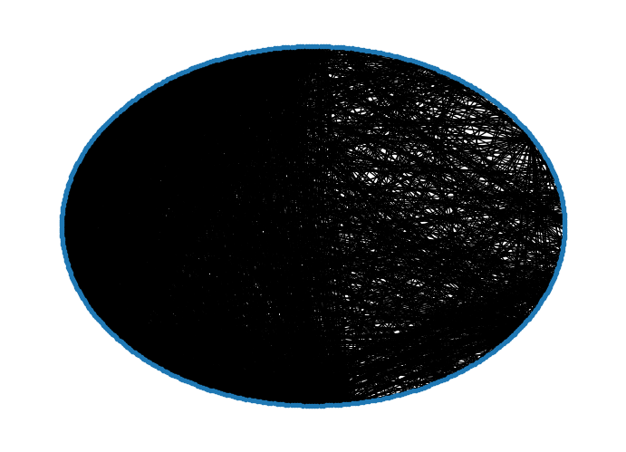

import networkx as nx
import matplotlib.pyplot as plt
G = nx.read_graphml("./data/openflights/openflights_usa.graphml.gz")
print(G)
print("Nodes:", G.nodes())
pos = nx.circular_layout(G)
nx.draw(G, pos=pos, node_size=10)
plt.show()Graph with 546 nodes and 2781 edges
Nodes: ['RDD', 'EUG', 'IDA', 'MFR', 'RDM', 'OOK', 'ABL', 'BKC', 'ITO', 'OBU', 'ORV', 'WLK', 'KTS', 'CAK', 'HSV', 'PKB', 'MGM', 'TRI', 'PAH', 'KKA', 'SMK', 'SKK', 'TNC', 'AKB', 'PGA', 'FCA', 'MBS', 'BGM', 'KFP', 'NLG', 'KLW', 'KWN', 'HNM', 'KYU', 'SCM', 'BTI', 'NME', 'KKH', 'NIB', 'PSG', 'AIN', 'CIC', 'KUK', 'WNA', 'IRC', 'SFB', 'SLQ', 'JST', 'HKB', 'MLY', 'CLM', 'KWT', 'ELI', 'GLV', 'PSM', 'TLA', 'WAA', 'MSO', 'HVR', 'HHH', 'GRK', 'TVF', 'SGY', 'MLL', 'RBY', 'EGE', 'CSG', 'LAW', 'FLG', 'ANV', 'TWF', 'MVY', 'KVC', 'STC', 'GTR', 'ERI', 'HYA', 'PTH', 'AUK', 'MGW', 'CRW', 'AVP', 'BJI', 'FAR', 'KPN', 'GCC', 'SVA', 'SCE', 'HGR', 'KOT', 'MEI', 'SPI', 'CEZ', 'HDN', 'LBL', 'COD', 'SGF', 'JLN', 'ABE', 'XNA', 'SBN', 'CKB', 'LRD', 'ORH', 'ACV', 'OAJ', 'DBQ', 'GGG', 'PVC', 'KTN', 'GGW', 'OGD', 'PIH', 'PDT', 'LUR', 'PIZ', 'RAP', 'BTT', 'FYU', 'ATK', 'TLJ', 'SNP', 'IGG', 'STG', 'ILI', 'PTU', 'AZA', 'FSM', 'KAL', 'GFK', 'KSM', 'PRC', 'TTN', 'BOS', 'KVL', 'OAK', 'OMA', 'HOT', 'OGG', 'ICT', 'MCI', 'MSN', 'DLG', 'HRO', 'PHX', 'BGR', 'BUF', 'GEG', 'SFO', 'GNV', 'MEM', 'ELD', 'PVU', 'LAX', 'CLE', 'WTK', 'CVG', 'AIA', 'JNU', 'LFT', 'EWR', 'BOI', 'GCK', 'MOT', 'DAL', 'HLN', 'LCH', 'KOA', 'MYR', 'ACK', 'DCA', 'LAM', 'ACY', 'PUB', 'PQI', 'ADQ', 'FLL', 'INL', 'SLC', 'HON', 'MDT', 'LNK', 'LAN', 'MUE', 'MSS', 'IAH', 'SOW', 'BFL', 'ELP', 'HRL', 'MMU', 'PNS', 'HOU', 'PIT', 'BRW', 'ECP', 'MMH', 'MIA', 'SEA', 'CHA', 'JAN', 'GAM', 'LGB', 'IPT', 'IND', 'KQA', 'HPN', 'JBR', 'ALW', 'YUM', 'CNM', 'DLH', 'BET', 'PKA', 'LIH', 'YAK', 'ATY', 'RIC', 'SHV', 'CDV', 'ORF', 'BPT', 'SAV', 'OME', 'PIE', 'MQT', 'SCC', 'SAT', 'ROC', 'TEB', 'BKW', 'RDU', 'DAY', 'ENA', 'LAS', 'IAG', 'IAN', 'PHF', 'TUS', 'BRL', 'AKP', 'PVD', 'SBY', 'CEC', 'BUR', 'DTW', 'TPA', 'EEK', 'MYU', 'SPS', 'HIB', 'SHH', 'MAF', 'GRB', 'LUK', 'ARC', 'AGS', 'ISN', 'LIT', 'SWF', 'HOM', 'TBN', 'ABR', 'ABY', 'AHN', 'DFW', 'MLB', 'APN', 'AUS', 'BFD', 'BFF', 'TYS', 'BQK', 'STL', 'GRR', 'CGI', 'CIU', 'ATL', 'DRG', 'CMX', 'DDC', 'DUJ', 'EAU', 'EKO', 'EWB', 'BNA', 'FAT', 'GRI', 'OTZ', 'HTS', 'TOG', 'IRK', 'LGA', 'TLH', 'LBE', 'LBF', 'AUG', 'LMT', 'IPL', 'MKL', 'LYH', 'MKG', 'MSL', 'FAY', 'OWB', 'BTV', 'JAX', 'DRO', 'IAD', 'CLL', 'MKE', 'ABI', 'COU', 'PDX', 'SHR', 'PBI', 'SLN', 'SMX', 'TUP', 'UIN', 'VCT', 'HNL', 'DSM', 'EWN', 'SAN', 'MLU', 'AOO', 'ONT', 'ROW', 'BRO', 'DHN', 'FMN', 'CRP', 'SYR', 'MDW', 'SJC', 'HOB', 'DEN', 'PHL', 'SUX', 'MCN', 'NUL', 'LAR', 'CMH', 'GAL', 'IMT', 'AET', 'ACT', 'TXK', 'PBG', 'VEE', 'ANC', 'LEB', 'BLI', 'WBQ', 'MOB', 'SAF', 'CEM', 'LNS', 'ALO', 'BLV', 'SHG', 'RSW', 'AKN', 'JHM', 'JFK', 'MKK', 'CYS', 'SCK', 'CHS', 'RNO', 'MTJ', 'RIW', 'BHM', 'VIS', 'MOD', 'SMF', 'COS', 'SDP', 'MCE', 'OTH', 'CDC', 'BDL', 'MFE', 'GCN', 'LBB', 'ORD', 'FAI', 'PIB', 'ART', 'PSP', 'AMA', 'SJT', 'FOE', 'EAT', 'ILM', 'BTR', 'PIR', 'TYR', 'BWI', 'LNY', 'AEX', 'PLN', 'CDB', 'TUL', 'SIT', 'ISP', 'MSP', 'ILG', 'DUT', 'MSY', 'PWM', 'OKC', 'ALB', 'VDZ', 'SNA', 'RHI', 'CPR', 'VPS', 'EYW', 'CLT', 'RKS', 'MCO', 'FLO', 'GTF', 'YNG', 'ESD', 'RUT', 'BRD', 'LWB', 'PGV', 'CYF', 'SBP', 'WSN', 'AGN', 'SLK', 'WMO', 'ELV', 'ADK', 'GST', 'OGS', 'HCR', 'HNS', 'KLG', 'MCG', 'ESC', 'ANI', 'STS', 'WRG', 'BFI', 'ASE', 'VLD', 'HPB', 'EMK', 'WRL', 'PUW', 'LWS', 'ELM', 'ITH', 'MRY', 'SBA', 'DAB', 'RSH', 'YKM', 'CAE', 'LCK', 'UNK', 'UST', 'GUC', 'MBL', 'PGD', 'JHW', 'CLD', 'SHD', 'DIK', 'SDY', 'CDR', 'KPV', 'MCK', 'GDV', 'OLF', 'ALS', 'CNY', 'VEL', 'HVN', 'AVL', 'GSO', 'FSD', 'FRD', 'MHT', 'APF', 'EGX', 'SDF', 'CHO', 'ROA', 'LEX', 'EVV', 'ABQ', 'BZN', 'BIL', 'BTM', 'TVC', 'KWK', 'BHB', 'RKD', 'JAC', 'RFD', 'SHX', 'CIK', 'GSP', 'HUS', 'HSL', 'BMI', 'GPT', 'AZO', 'TOL', 'FWA', 'DEC', 'CID', 'LSE', 'CWA', 'PIA', 'ATW', 'RST', 'CMI', 'MHK', 'MOU', 'FNT', 'FKL', 'GJT', 'SGU', 'VAK', 'SRQ', 'HNH', 'MLI', 'MTM', 'HYG', 'GLH', 'BIS', 'PSC', 'PIP', 'MWA', 'AKK', 'KYK', 'KLN', 'NUI']